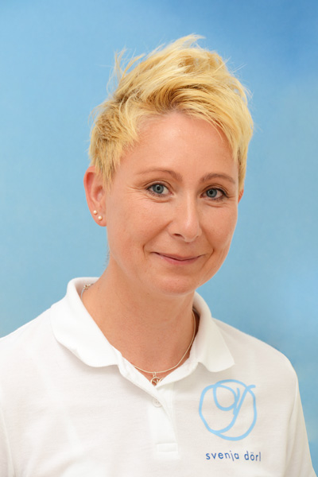

Svenja Dörl
Ergotherapeutin
Ausbildung & Spezialisierung: Ausbildung zur Ergotherapeutin, seit 1997 Berufsausübung mit fachlicher Leitung im Bereich Neurologie. Ausbildung zur Bobath-Therapeutin mit Spezialisierung auf „Forced Use“, Therapie des Facio-Oralen Traktes (F.O.T.T.), Ataxie, Multiple Sklerose und Feldenkrais. Ausbildung im Bereich Spiegeltherapie, Demenzbehandlung und Kinesio-Taping. Seit Januar 2012 eigene Praxis.
Weiterbildungen: Spiraldynamik, Lymphdrainage, Bobath, Propriozeptive Neuromuskuläre Fazilitation (PNF), Sensorische Integrationstherapie (Grundkurs), LRS, Dyskalkulie, AD(H)S, Linkshändigkeit, Auditive Verarbeitungs- und Wahrnehmungsstörung (AVWS), Hirnleistungstraining, Handtherapie, Diagnostik und Therapie.